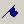
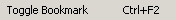
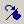
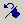
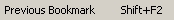
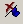
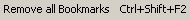
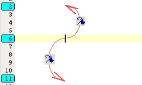

| Bookmark | Previous Next |
| File Toolbar | Search menu | Action |
|  |  | Toogle mark line with in the toolbar or in search menu. |
|  | Go to next marked line (after current position) | |
|  |  | Go to previous marked line (before current position |
|  |  | Remove all marked lines |
Example :

Note that regular bookmarks are numbered with document line numbers.
Random Bookmark :